Applying SEALS to downscale MAgPIE outputs
Overview
The Model of Agricultural Production and Its Impact on the Environment (MAgPIE) is a global food and land system modelling framework. It uses a wide range of spatially-explicit biophysical and socioeconomic information to model global land-use dynamics throughout the 21st century. MAgPIE operates at two spatial scales that include a coarse scale of twelve model regions with similar socioeconomic characteristics and a subregional level that combines biophysical information, such as suitability for agricultural production (crop yield potential, irrigation water requirements, travel time to urban markets etc.), to determine the cost-effectiveness of different land-use activities. Both these resolutions, however, are typically too coarse to assess how global land-use dynamics could drive landscape-scale changes and associated changes in biodiversity and ecosystems service supply, which is a key sustainability challenge.
The Spatial Economic Allocation Landscape Simulator (SEALS) model can therefore be applied to spatially allocate projected land-use dynamics to spatial scale that is relevant for assessing landscape and biodiversity change. SEALS uses empirically calibrated adjacency relationships, physical suitability and conversion eligibility information at a spatial resolution of 300 x 300 Meter to allocate land use activities across space.
In the following this tutorial describes how both the MAgPIE and SEALS models can be linked using some of the functionalities provided by MAgPIE and SEALS to processes model outputs (MAgPIE) or inputs (SEALS) respectively. This tutorial therefore assumes some familiarity with the MAgPIE model - in particular how to set up model runs. Basic tutorials on how to run the MAgPIE model can be found here https://magpiemodel.github.io/tutorials/. A full documentation of the MAgPIE model (release version 4.7.2) can be accessed under https://rse.pik-potsdam.de/doc/magpie/4.7.2/ (substitute the version number 4.7.2 with any newer release version number to get the latest documentation).
Create MAgPIE outputs for SEALS by using output scripts
The MAgPIE model provides several output scripts that can be executed after a model run and are stored under scripts/output in the MAgPIE folder. Two scripts are particularly relevant for providing MAgPIE outputs to SEALS: the extra/disaggregation.R script and the extra/reportMAgPIE2SEALS.R script. The extra/disaggregation.R script disaggregates coarse-resolution land-use projections to a spatial resolution of 0.5 degrees and is run by default after each model run. The extra/reportMAgPIE2SEALS.R script, on the other hand, generates a NetCDF file that can readily be used by SEALS but is not run by default.
The output scripts can be selected and executed via the command line. Therefore, on the command prompt, navigate to the MAgPIE model folder and use the following command:
Rscript output.ROn the command line you are now asked for which of the model runs you would like to do the postprocessing. You can choose all, select a specific run, or run the postprocessing for a selection of runs by choosing search by the pattern.
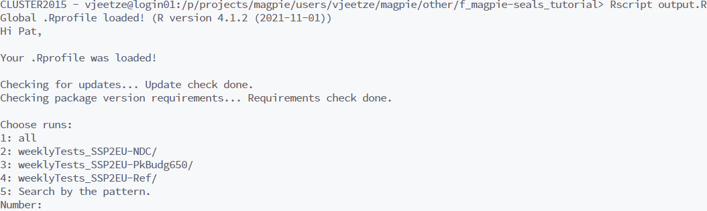
After this you can select the output script that you want to execute. Choose extra.
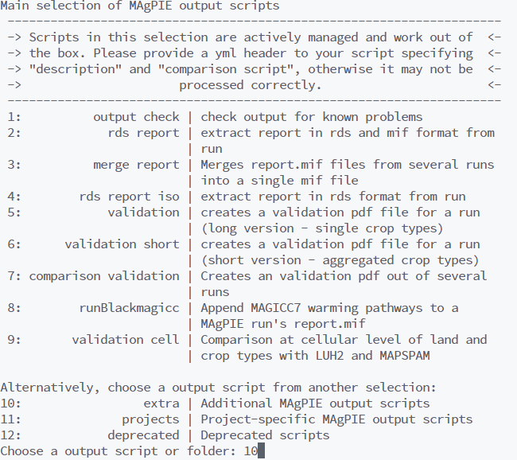
Next select reportMAgPIE2SEALS.
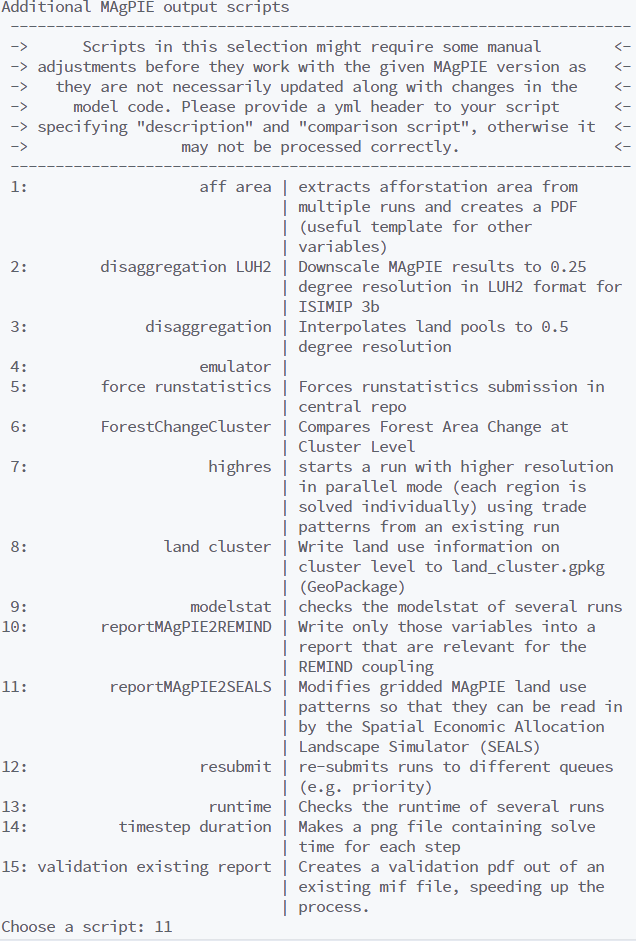
Finally, choose the run submission type, e.g. Direct execution.
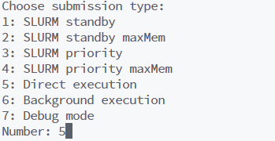
All outputs are written to a subfolder in the output folder within the MAgPIE directory. This subfolder (or run folder) is created automatically at the beginning of a model run and its name is a combination of the run title and date (For further information see https://magpiemodel.github.io/tutorials/t06-changingconfig). Before you run reportMAgPIE2SEALS, please make sure that the script extra/disaggregation.R was executed without error. If the script extra/disaggregation.R was completed successfully, the run folder should contain the file cell.land_0.5_share.mz. Once the script extra/reportMAgPIE2SEALS.R has finished the run folder should contain a file named cell.land_0.5_SEALS_<run title>.nc. This file contains spatially-explicit information on the share of total land per grid cell used for different land-use activities (cropland, pasture, forest, urban etc.) projected until 2050, which can now be used as an input for SEALS.
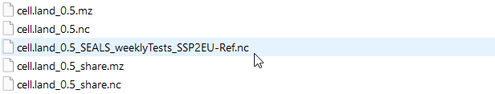
Change your start script to generate MAgPIE outputs for SEALS
If you are familiar with setting up a start script for MAgPIE runs (see https://magpiemodel.github.io/tutorials/t07-startscript), an alternative way of generating MAgPIE outputs for SEALS is by adding "extra/reportMAgPIE2SEALS" to the setting
cfg$output <- c("output_check", "extra/disaggregation", "rds_report")so that it reads
cfg$output <- c("output_check", "extra/disaggregation", "rds_report", "extra/reportMAgPIE2SEALS")As the order of the vector determines the order of execution, please make sure that "extra/reportMAgPIE2SEALS" is called after "extra/disaggregation".
Setting up SEALS to downscale MAgPIE outputs
After generating the output cell.land_0.5_SEALS_<run title>.nc, the following describes how this information can be used as input for the SEALS model.
First, we need to relate the land use types of the MAgPIE model to the land cover types used by the SEALS model. While MAgPIE separates seven different main land types (cropland, grassland, primary forest, secondary forest, forestry, non-forest vegetation & urban), the SEALS model only allocates changes for 5 main land types (urban, cropland, grassland, forest & other natural vegetation). Below a mapping between the different land types is shown.
src_id,dst_id,src_label,dst_label,src_description,dst_description
6,1,urban,urban,urban land,
1,2,crop,cropland,cropland,
2,3,past,grassland,grassland,
3,4,primforest,forest,primary forest,
4,4,secdforest,forest,secondary forest,
5,4,forestry,forest,forestry,
7,5,other,othernat,non-forest vegetation,Copy and paste this mapping into a CSV file and save it, e.g. under base_data/seals/default_inputs/magpie_seals7_correspondence.csv. The folder base_data/seals/default_inputs also contains other mappings such as a mapping betweehn LUH2v2 land types and SEALS. This mapping can now be used to set up the scenario_definitions.csv. The scenario_definitions.csv provides SEALS with all necessary information on the input data (or MAgPIE outputs), including the path to the MAgPIE outputs. The scenario_definitions.csv also allows the user to set up multiple SEALS runs (e.g. in the case of different scenario runs) in one go. One way to better understand the scenario_definitions.csv is to run SEALS on the test data without further modification. This will automatically generate a scenario_definitions.csv in a test project folder. This scenario_definitions.csv can then be tailored to your project needs.
The following shows how an example scenario_definitions_tutorial.csv is created that provides relevant information for a set of different MAgPIE test runs. Assume we have created land use projections for three different test scenarios: a reference ‘business-as-usual’ scenario (weeklyTests_SSP2EU-Ref), a low ambition mitigation scenario, in which current nationally determined contributions (NDCs) under the Paris agreement for the land sector are fulfilled (weeklyTests_SSP2EU-NDC) and a highly ambitious mitigation scenario in line with the 1.5 degree target (weeklyTests_SSP2EU-PkBudg650). For each of the scenarios, we have created gridded land-use projections in a format that can be read by SEALS using the output script extra/reportMAgPIE2SEALS.R (see above).
Here, the scenario_definitions_tutorial.csv contains a line for each scenario specified under scenario_label. Note that the Baseline always needs to be defined as well. In the years column you can specify the years for which SEALS should do a downscaling. Multiple years can be separated by a space.
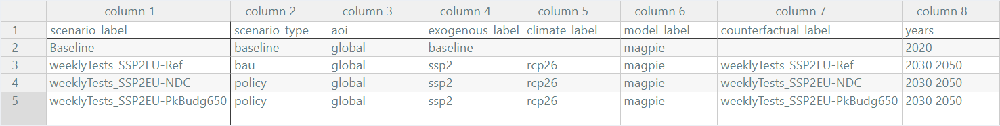
Set the path to the gridded MAgPIE outputs in the column coarse_projections_input_path
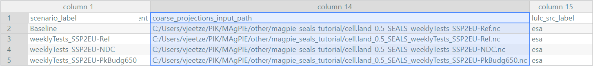
The lulc_correspondence_path gives the path to a mapping between ESA CCI land cover classes and the aggregated land cover types used in SEALS.
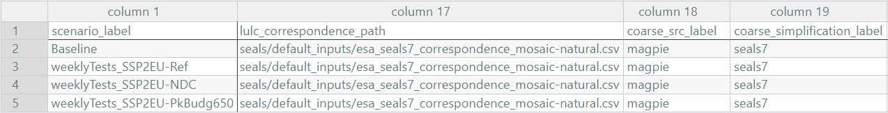
The default mapping in SEALS is stored under base_data\seals\default_inputs\esa_seals7_correspondence.csv. For MAgPIE-SEALS couplings, however, it is recommended to use a mapping that classifies “crop_natural_mosaic” as “othernat” and “natural_crop_mosaic” as “forest” to better align the total cropland extent of the ESA map with the cropland initialisation in MAgPIE. That there is an overestimation of the cropland extent in the ESA CCI data is a well-know issue. Thus, the lines in esa_seals7_correspondence.csv
6,,30,2,crop_natural_mosaic,cropland
7,,40,2,natural_crop_mosaic,croplandare changed to
6,,30,2,crop_natural_mosaic,othernat
7,,40,2,natural_crop_mosaic,forestin esa_seals7_correspondence_mosaic-natural.csv.
Next, we set the path to the mapping between MAgPIE land use types to SEALS land cover types, as defined above
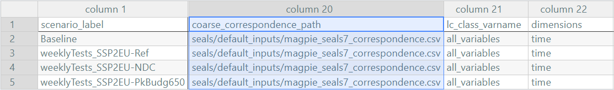
We also specify a set of regressors used during downscaling. Tables of trained model coefficients used by SEALS can be found under base_data/seals/default_inputs. Here we can also align some model constraints between MAgPIE and SEALS. If, for example, compliance with currently implemented land policies such as protected areas is assumed in MAgPIE, these constraints also need to be reflected during the downscaling. We here therefore add an additional multiplicative regressor that precludes expansion of agricultural land (cropland and grassland) in legally protected areas as reported by the WDPA database, which is in line with the assumption in MAgPIE.
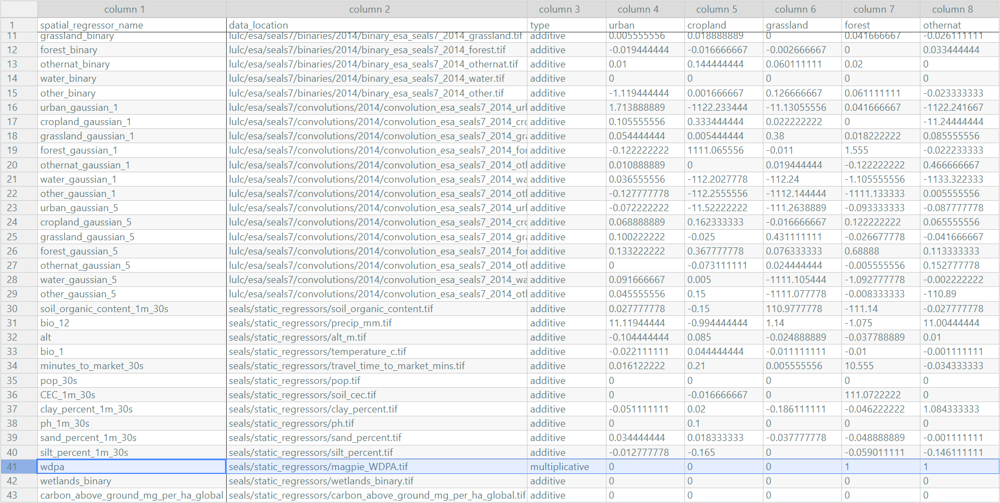
Similarly, the same functionality can also be used to specify policy scenarios, such as the expansion of protected areas in line with the 30x30 goal of the Global Biodiversity Framework. The seals/static_regressors/magpie_30by30.tif contains both currently protected areas from the WDPA database and areas that might be protected under a global 30x30 protection scenario.
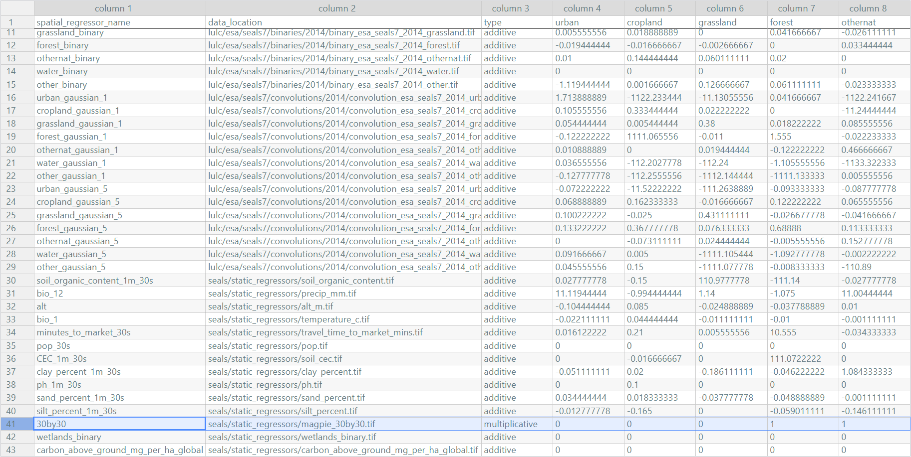
Finally, the path to the regressor used during the downscaling must also be added to the scenario_definitions.csv file, while the base land-cover data base_year_lulc_path must refer to the same year as defined in the Baseline case.
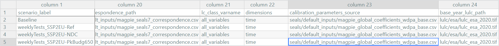
Save the scenario_definitions_tutorial.csv under ./input in your SEALS project folder and don’t forget to add it to your SEALS run file and you are good to go.
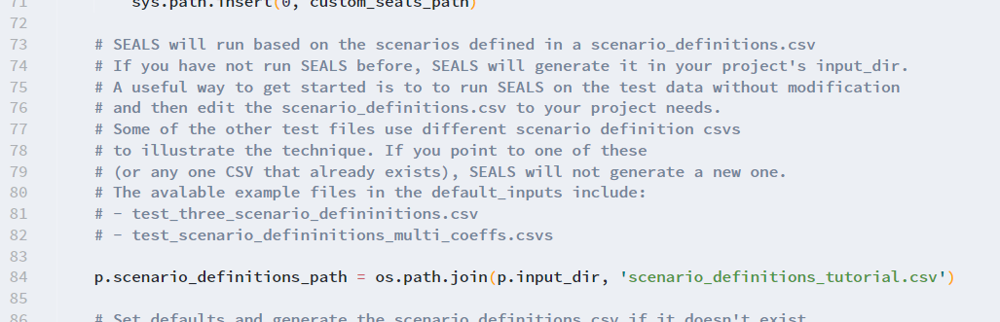